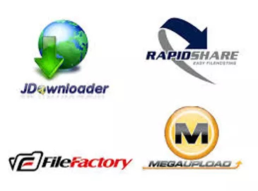
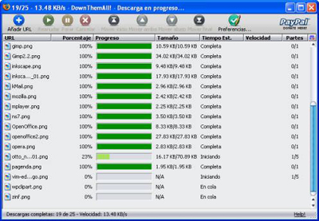

GESTORES DE DESCARGAS
¿Qué es?
Un gestor de descargas es un programa diseñado para descargar
archivos de Internet, ayudado de distintos medios como algoritmos,
para ir pausando y reanudando las descargas de algún servidor FTP
o página de Internet. Se suele emplear para descargar archivos
grandes, como imágenes ISO, programas, vídeos, música, por
mencionar algunos. Permite automatizar la descarga de varios
archivos según unos parámetros de configuración e incluso permite
descargar un sitio web completo.

Funciones
- Pausar la descarga de archivos muy grandes.
- Reanudar descargas interrumpidas o pausadas.
-
Descargar varios archivos de un sitio automáticamente a través
de unas reglas sencillas.
- Transferencias automáticas recursivas.
- Descargas programadas.
-
Búsquedas de sitios espejos, y gestión de varias y diferentes
conexiones a un mismo archivo para acelerar su descarga.
-
Evitar que una descarga sin finalizar se corrompa si hay una
desconexión accidental, ofreciendo la posibilidad de reanudarla
posteriormente.
Tipos de gestores
Gestor de descargas continuas.
Gestor de descargas por categorías.
Gestor de descargas fragmentadas.
Pero los gestores de descargas también tienen desventajas. Cuando
usa todo el ancho de banda, es casi imposible abrir una página
web, usa Java y la cantidad de descargas paralelas y su velocidad
de descarga, dependen del servidor. Y además:

-
Los archivos que, para las empresas como la SGAE creen que son
ilegales pero que en España no lo son debido a la ley de copia
privada, a menudo son borrados o bloqueados porque se favorecen
de la ley de los EE.UU.
-
Requiere tener una cuenta pagada para obtener menos
restricciones.
-
Para compartir archivos tienes que esperar mucho tiempo a que
suba a un servidor.
-
Es muy difícil saber sobre la disponibilidad de los archivos,
aunque existen programas capaces de comprobar los enlaces y
verificar si están disponibles o no, en algunos casos son
programas proporcionados por el servidor en cuestión.
-
Si un servidor tiene problemas, no se puede descargar el
archivo.
Algunos gestores de descargas
-
Downloader: Es uno de los gestores de descargas más
completos que te puedes encontrar, y también uno de los más
personalizables y además permite monitorizar descargas de forma
remota y bajar listas cifradas de descargas. Cuando está
ejecutado, sólo copia el enlace de una web y lo analizará en
busca de elementos a descargar.
-
Administrador de descargas de Microsoft: Microsoft tiene
un gestor de descargas propio independiente de los que ya
incluye en Microsoft Edge e Internet Explorer. Es muy sencillo,
pero te da la confianza de que detrás, hay una importante
empresa detrás. En este caso es manual, y tienes que pulsar en
su botón de nueva descarga para pegar el enlace que quieres
agregar.
-
Free Download Manager (FDM): Permite pausar y reanudar
descargas, controlar el ancho de banda y descargar webs
completas o documentos específicos de un archivo. Además, tiene
soporte para plugins que le dan funcionalidades como descargas
BitTorrent.
-
Internet Download Accelerator: Un gestor que categoriza
automáticamente las descargas para gestionarlas más cómodamente,
y que permite activar la descarga automática de extensiones de
archivo determinadas. Puede buscar malware al analizar las
direcciones, y también tiene sistema de plugins.
-
EagleGet: Puede leer los enlaces del portapapeles, e
incluye descargas de BitTorrent o vídeos de páginas como
YouTube. Permite programar descargas y analizar enlaces en busca
de malware.
-
GetGo Download Manager: ermite ver datos de la descarga
antes de iniciarla y tiene múltiples opciones a la hora de
importar los enlaces. Maximiza al máximo la velocidad de las
descargas, puedes programarlas, pausarlas y reanudarlas si algo
falla.
-
Turbo Download Manager: Permite ver una muestra del
archivo de vídeo o audio a bajar antes de empezar la descarga, y
realiza múltiples conexiones al mismo tiempo para acelerarlas.
Tiene plugins e integración con el navegador, y funciones
esenciales. Puede reanudar una descarga si falla.
Otros gestores de descarga son mipony, FlashGet, Free Download
Manager, QuickDownloader, ReGet, KGet, Go!Zilla, Orbit Downloader,
GetRight, NetAnts, Offline Explorer, rdesc, KMAGO, Freerapid
Downloader, RapGet, Tucan Manager, MegaDownloader, erc.